第 7 章 目标检测：R-CNN、SSD 与 YOLO#
本章解决：从"这张图是什么"升级到"图里有哪些物体、各在哪里"。前六章的图像分类默认一张图只有一个主角；本章让网络同时输出类别 + 边界框。 全书位置：第 5、6 章的 CNN/迁移学习是本章的"特征提取器零件"；本章讲完判别式任务的巅峰（检测），第 8 章起进入生成模型。 三大主角：R-CNN 家族（两阶段，准）、SSD 与 YOLO（单阶段，快），外加一个自动驾驶 SSD 训练项目。
7.0 本章导图#
7.1 通用目标检测框架#
图像分类假设图里只有一个主要目标，模型只管输出类别。**目标检测（Object Detection）**要同时干两件事：**定位（localize）**图中的一个或多个物体 + 分类（classify）每个物体——做法是在每个被识别的物体周围画一个边界框（Bounding Box），框上带着预测类别。
| 图像分类 | 目标检测 | |
|---|---|---|
| 目标 | 预测图中物体的类别 | 预测物体位置（边界框）+ 各框的类别 |
| 输入 | 单物体的图像 | 含一个或多个物体的图像 |
| 输出 | 一个类别标签 + 概率（如 84% cat） | 一个或多个边界框（坐标）+ 每框的类别概率 |
| 双物体示例 | —— | box1 坐标 \((x,y,w,h)\) + 类别概率；box2 坐标 + 类别概率 |
坐标约定先钉死：\((x, y, w, h)\) 里 \((x, y)\) 是边界框中心点坐标，\(w\)、\(h\) 是框的宽和高。（7.2 节 R-CNN 的回归器用的是"框原点 + 宽高"的写法，两种口径都会出现，注意区分。）
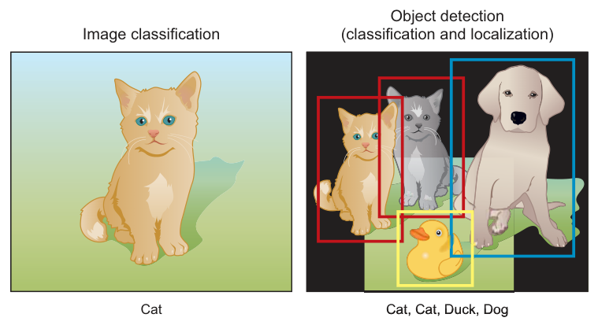
图 7.1 分类任务输出一个"cat"标签；检测任务输出四个框及各自类别（两只猫、一只鸭、一只狗）（截自原书）应用面：自动驾驶要靠检测车辆、行人、道路、障碍物来规划路线；机器人要检测感兴趣目标；安防系统要检测入侵者等异常目标。本章路线：① 通用框架 → ② R-CNN 家族 / SSD / YOLO 三大算法 → ③ 端到端实战项目。
一个典型的检测系统有四个组件：
- Region Proposal（区域候选）——用算法或 DL 模型生成感兴趣区域（RoI, Region of Interest）：网络认为"可能有物体"的区域。输出是大量边界框，每个框带一个 objectness score（目标性得分），得分高的框进入后续处理。
- 特征提取与网络预测——对每个候选框提取视觉特征，判断有没有物体、是什么物体（分类组件）。
- 非极大值抑制（NMS, Non-Maximum Suppression）——同一个物体通常被框了多次，NMS 把重叠框合并成一个。
- 评估指标——分类用 accuracy/precision/recall，检测有自己的指标：mAP、PR 曲线、IoU。
flowchart LR
A["① Region Proposal<br/>成千上万个候选框 + objectness"] --> B["② 特征提取与预测<br/>预训练 CNN → 每框出 (x,y,w,h) + 类别"]
B --> C["③ NMS<br/>同一物体多个框 → 一个"]
C --> D["④ 评估<br/>FPS（速度）/ mAP（精度）"]7.1.1 Region proposals：先圈出"可能有货"的区域#
系统先扫图，提出 RoI 供后续分析。每个候选区域打一个 objectness score：高分 = 大概率含物体（foreground 前景），保留送入后续步骤；低分 = 大概率是背景（background），直接丢弃。
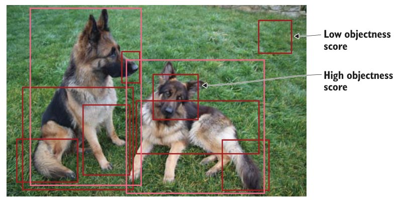
图 7.2 高 objectness 的候选框（前景）被保留，低 objectness 的（背景）被丢弃（截自原书）生成候选的方法：最早的 Selective Search（选择性搜索） 算法（讲 R-CNN 时细讲）；后来的方法用深度网络提取的复杂视觉特征来生成区域。关键认知：这一步会产出成千上万个候选框。网络按 objectness 阈值给每个区域贴"前景/背景"标签——阈值是可调超参数：
- 阈值过低：穷举所有可能的候选 → 查全率高，但计算量爆炸、检测变慢；
- 阈值过高：候选少、速度快，但可能漏检。
所以 region proposal 的本质权衡是候选数量 vs 计算复杂度，正确姿势是用问题专属的先验信息减少 RoI 数量。
7.1.2 Network predictions：每个候选都过一遍"分类器 + 定位器"#
这一步的主角是预训练 CNN：在 ImageNet / MS COCO 这类大数据集上预训练的分类模型，提取的特征泛化性相当好——所以检测框架普遍"借"它们当特征提取器（第 6 章迁移学习的直接应用）。
网络对每个高 objectness 区域做两个预测：
- 边界框预测：输出定位物体的框坐标 \((x, y, w, h)\)（中心点 + 宽高）；
- 类别预测：经典 softmax 输出每类的概率。
因为候选成千上万，同一个物体必然被多个框命中。图 7.3 里网络确实找到了狗、也分对了类——但检测"开火"了 5 次，因为狗出现在 5 个 RoI 里，于是有 5 个框。
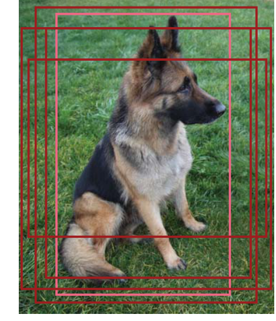
图 7.3 检测器对同一物体产出多个框；我们要把它合并成最贴合的那一个（截自原书）多数问题里每个物体只要一个框。设想你在写"数图里有几只狗"的程序——按现在的输出会数出 5 只。这就轮到 NMS 登场。
7.1.3 非极大值抑制（NMS）#
NMS（Non-Maximum Suppression，非极大值抑制）保证每个物体只被检测一次。顾名思义：在围着同一物体的所有框里，找预测概率最大的那个框，**抑制（suppress）**掉其余的框。若物体较大、候选超过 2000 个，其中很多框彼此高度重叠——NMS 后只剩最贴合的那个（图 7.4）。
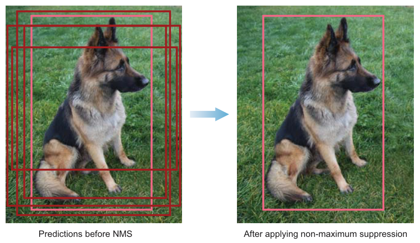
图 7.4 NMS 前：同一物体一堆框；NMS 后：只留拟合最好的一个（截自原书）NMS 算法四步：
- 丢弃预测概率低于**置信度阈值（confidence threshold）**的所有框（阈值可调）；
- 在剩余框中选出概率最高的那个；
- 计算其余同类别预测框与它的重叠度，重叠度度量就是 IoU（下一小节）；
- 与已选框 IoU 高于 NMS 阈值的框被抑制（它们大概率框的是同一个物体）。NMS 阈值通常取 0.5，可调——想多留框就调高，想更狠地删就调低。
NMS 技术在各检测框架里基本是标配，但置信度阈值和 NMS 阈值都要按场景调。
拓展：'非极大值'是什么意思？
传统信号处理里有"极大值抑制"：只保留局部极大值点、抹平其余。NMS 加个"非"字——保留极大值本身，抑制非极大值的邻居。放到检测里：置信度最高的框是"极大值"，和它高度重叠的低分框都是"非极大值"，一律删掉。所以两个阈值分工明确：confidence threshold 管"框够不够自信"，NMS 阈值管"两个框是不是同一个物体"。
按书 7.1.3 的步骤把 NMS 补成可运行的 numpy 实现（单类简化版，多类时按类别分组各做一遍）：
# ===== 书 7.1.3 NMS 算法步骤的 numpy 可运行实现 =====
import numpy as np
def iou_matrix(boxes):
"""boxes: (N,4) 每行 [xmin, ymin, xmax, ymax]，返回 (N,N) IoU 矩阵"""
x1 = np.maximum(boxes[:, None, 0], boxes[None, :, 0]) # 交集左上 x
y1 = np.maximum(boxes[:, None, 1], boxes[None, :, 1])
x2 = np.minimum(boxes[:, None, 2], boxes[None, :, 2]) # 交集右下 x
y2 = np.minimum(boxes[:, None, 3], boxes[None, :, 3])
inter = np.clip(x2 - x1, 0, None) * np.clip(y2 - y1, 0, None) # 交集面积
area = (boxes[:, 2] - boxes[:, 0]) * (boxes[:, 3] - boxes[:, 1])
union = area[:, None] + area[None, :] - inter # 并集面积
return inter / np.clip(union, 1e-9, None)
def nms(boxes, scores, conf_thresh=0.5, nms_thresh=0.5):
keep = scores >= conf_thresh # 第 1 步：置信度阈值先筛
boxes, scores = boxes[keep], scores[keep]
order = scores.argsort()[::-1] # 按置信度从高到低
selected = []
while order.size > 0:
i = order[0] # 第 2 步：取最高分框
selected.append(i)
ov = iou_matrix(boxes[order]) # 第 3 步：算它与其余框的 IoU
order = order[1:][ov[0, 1:] <= nms_thresh] # 第 4 步：抑制高重叠框
return boxes[selected], scores[selected]
boxes = np.array([[10,10,60,60],[12,12,62,62],[200,200,260,260]], dtype=float)
scores = np.array([0.9, 0.8, 0.7])
print(nms(boxes, scores)) # 前两个框几乎重叠 → 只留 0.9 那个；第三个保留
7.1.4 检测器评估指标：FPS 与 mAP#
检测器用两个主指标评估：**帧率（FPS, Frames Per Second）**测速度，**平均精度均值（mAP, mean Average Precision）**测精度。论文里的标准句式："Network X achieves mAP of Y% at Z FPS"——例如 Faster R-CNN 只有 7 FPS，SSD 能跑 59 FPS。
IoU：两个框的重叠度#
**交并比（IoU, Intersection over Union）**衡量预测框 \(B_{predicted}\) 与人工标注的真值框 \(B_{ground\ truth}\) 的重叠程度：
取值 0（完全不重叠）到 1（100% 重叠），越高越好。算 IoU 需要两个框：标注阶段人工画的真值框（ground truth） + 模型输出的预测框。
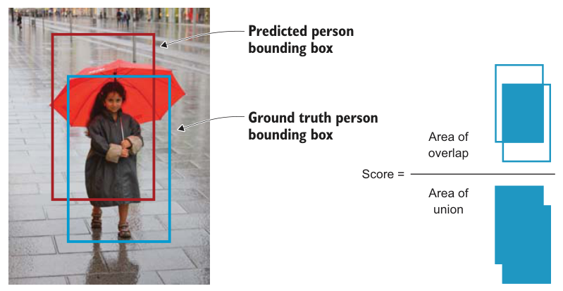
图 7.5 IoU = 重叠面积 / 并集面积（截自原书）IoU 用来定义"预测对了没有"：IoU 高于阈值的预测记为 True Positive（TP），低于阈值记为 False Positive（FP）。阈值按比赛可调，标准值 0.5：MS COCO 等挑战赛会用 mAP@0.5 或 mAP@0.75 这种写法，@后面的数就是 IoU 阈值。
PR 曲线#
有了 TP/FP，就能像第 4 章一样对每个类别算 precision 和 recall（FN = False Negative）：
对所有类别算完 precision/recall 后，画出 PR 曲线（Precision-Recall curve）（图 7.7）。做法：变动置信度阈值，每个物体类别画一条曲线。好检测器的标准：recall 增大时 precision 仍然保持高位——也就是说你随便调置信度阈值，两个指标都扛得住；差检测器想拉高 recall 就得多收 FP（precision 被拖低）。所以 PR 曲线通常从高 precision 起步、随 recall 增大而下降。
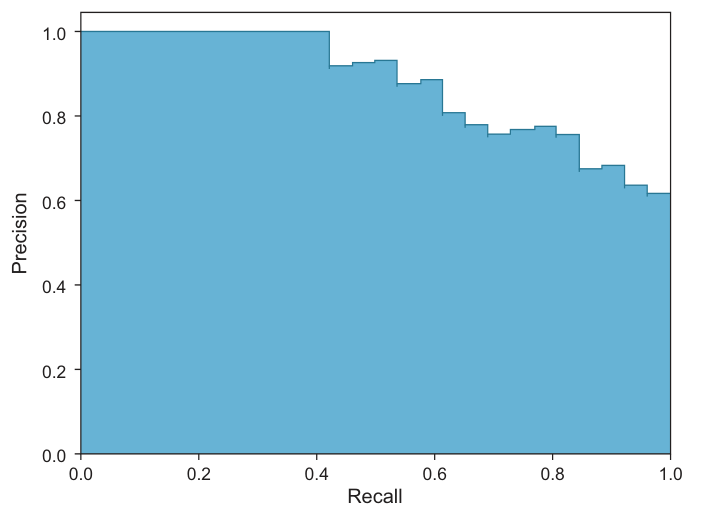
图 7.7 PR 曲线：precision 随 recall 增大下降得越慢，检测器越好（截自原书）从 PR 曲线到 mAP#
- AP（Average Precision，平均精度） = PR 曲线下的面积（AUC），每个类别各有一个 AP；
- mAP（mean AP） = 所有类别 AP 的平均。
注意有些论文把 AP 和 mAP 混用。mAP 的完整计算流程（书 RECAP）：
- 取每个边界框的 objectness score（框里有物体的概率）；
- 计算 precision 和 recall；
- 变动得分阈值，为每个类别画 PR 曲线；
- 算每类的 AP（PR 曲线下面积）；
- 对所有类别求平均 → mAP。
mAP 比传统指标（如 accuracy）复杂得多——好消息是不用手算，绝大多数 DL 检测实现都自带 mAP 计算，本章项目里会用到。
拓展：mAP 为什么比单点 accuracy 更公平？
检测输出是"框 + 置信度"，选哪个置信度阈值会直接改变结果：阈值高 → 报得少而准（precision 高、recall 低）；阈值低 → 报得多而杂（反过来）。单点 accuracy 只反映某一个阈值下的表现，换个阈值结论就翻车。mAP 把整条 PR 曲线（所有阈值）都算进来，再对类别取平均，既排除了"挑阈值"的水分，也不会被"类别数量不平衡"带偏——这才是对"检测器整体能力"的公平评分。
IoU 的 numpy 单对框实现（完整批量版见上面 iou_matrix）：
# ===== 书 7.1.4 IoU 算例 =====
def iou(a, b):
x1, y1 = max(a[0], b[0]), max(a[1], b[1]) # 交集左上角
x2, y2 = min(a[2], b[2]), min(a[3], b[3]) # 交集右下角
inter = max(0, x2 - x1) * max(0, y2 - y1)
area_a = (a[2] - a[0]) * (a[3] - a[1])
area_b = (b[2] - b[0]) * (b[3] - b[1])
return inter / (area_a + area_b - inter)
a = [0.0, 0.0, 100.0, 100.0] # 真值框
b = [20.0, 20.0, 120.0, 120.0] # 预测框，右移下移 20px
print(iou(a, b)) # 0.4705...：交集 80×80=6400，并集 20000-6400=13600
7.2 基于区域的卷积神经网络（R-CNN 家族）#
R-CNN 家族（R-CNN，Region-based CNN）由 Ross Girshick 等人在 2014 年开创，2015、2016 年分别扩展出 Fast R-CNN 与 Faster R-CNN。本节先快速走完这条演进线，再深入 Faster R-CNN 的架构。原论文：R-CNN（arXiv:1311.2524）、Fast R-CNN（arXiv:1504.08083）、Faster R-CNN（arXiv:1506.01497）。
7.2.1 R-CNN：把检测拆成"候选 + 分类"的流水线#
R-CNN 是家族里最朴素的架构，却是理解所有后续检测算法的地基——它是 CNN 用于目标检测与定位最早的大型成功应用之一，在 PASCAL VOC-2012 和 ILSVRC 2013 检测挑战上拿下当时的 SOTA。
R-CNN 由四个模块组成：
- 提取感兴趣区域（= region proposal）：Selective Search 算法扫描输入图，找出"团块状"的区域作为 RoI。候选尺寸不一，但 CNN 要求固定输入尺寸——所以 RoI 还要扭曲（warp）成固定大小。
- 特征提取模块：在每个候选区域上跑一个预训练 CNN 提特征（就是前面章节学的那个典型 CNN 特征提取器）。
- 分类模块：用 SVM（传统 ML 分类器）基于特征给候选分类。
- 定位模块（= 边界框回归器，bounding-box regressor）：回归出框的位置和大小。ML 问题分两类——分类输出离散类别，**回归（regression）**输出连续值。这里回归器对每个物体类别预测 4 个实数 \((x, y, w, h)\) 定义边界框。
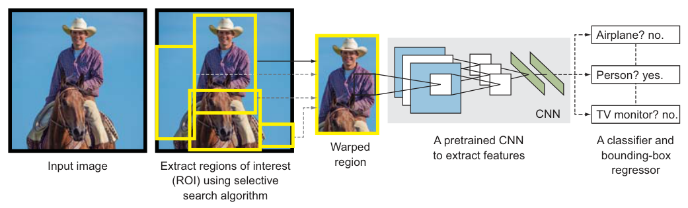
图 7.8 R-CNN 架构总览：Selective Search 提候选 → 扭曲 → CNN 提特征 → 分类器 + 回归器（截自原书）本质上，R-CNN 把目标检测转化成了"一堆小图的图像分类问题"。
Selective Search：贪心搜索 + 自底向上分割#
Selective Search 是一个贪心搜索算法，通过把相似的像素、纹理合并成矩形区域来找出可能含物体的区域。它合两种老办法之长：穷举搜索（检查图里所有位置）+ 自底向上分割（层次化合并相似区域）。
工作方式：先跑一个分割算法找 blob（图中的"团块"，可能是一个个物体），再自底向上递归合并区域，产出约 2,000 个待查区域：
- 计算所有相邻区域之间的相似度；
- 合并最相似的两个区域，重算新区域与其邻居的相似度；
- 重复直到整个物体被合并进同一个区域。
细节（相似度怎么算）超出本书范围，可以当黑盒用："一个聪明地扫描图像、给你提出 RoI 位置的算法"。想深挖看原论文 Uijlings et al., "Selective Search for Object Recognition," 2012。
训练 R-CNN：三个模块分别训#
四个模块里只有 Selective Search 不用训练（它不是学习算法）。所以训练 R-CNN 要做三件事：
- 训练特征提取 CNN：从零训练（少见）或微调预训练网络（第 6 章的方法）；
- 训练 SVM 分类器：传统 ML 分类器，同样要在带标签数据上训练；
- 训练边界框回归器：对 K 个物体类别各输出 4 个实数，把候选框"收紧"到物体上。
看出问题了吗——训练一个 R-CNN 要分别训练三个模块，几乎没有共享计算。多阶段流水线训练是 R-CNN 的一大硬伤。
R-CNN 的缺点#
R-CNN 好懂、当年也 SOTA，但它不是单一的端到端系统，而是几个独立算法拼起来的。三个显著缺点：
- 检测非常慢：每张图 Selective Search 提约 2,000 个 RoI，每个候选都要单独过一遍完整流水线（CNN 特征提取 + 分类器），不共享计算 → 计算量爆炸。这使 R-CNN 与自动驾驶等实时应用无缘。
- 训练是多阶段流水线：CNN、SVM、回归器三套训练，复杂且非端到端。
- 训练在空间和时间上都贵：训练 SVM 和回归器前，要把每张图每个候选的特征写到磁盘——用 VGG16 这类深网络，几千张图的训练在 GPU 上要跑数天，提取的特征要占几百 GB 存储。
我们需要一个端到端 DL 系统来修掉这些毛病，还更快更准——先看 Fast R-CNN。
7.2.2 Fast R-CNN：整图过一次 CNN#
Fast R-CNN（Girshick，2015）与 R-CNN 相似，但靠两个改动同时提速又提精度：
- 先 CNN，后提候选：把特征提取器先作用在整张输入图上，然后再提区域——整图只跑一次 ConvNet，而不是让 2,000 个重叠区域各跑一遍。
- softmax 换掉 SVM：把分类也并进 ConvNet 的工作——一个模型同时干特征提取和分类。
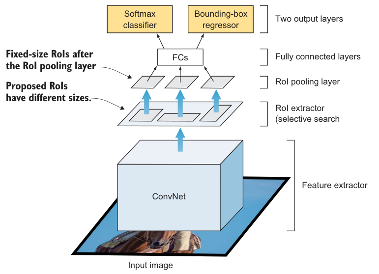
图 7.10 Fast R-CNN：特征提取在整图上进行，候选从最后的特征图上取，RoI Pooling 输出固定尺寸（截自原书）架构四模块：
- 特征提取模块：ConvNet 从整图提特征；
- RoI 提取器：Selective Search 仍在原图上提约 2,000 个候选——但映射到特征图上取用；
- RoI Pooling 层：新组件。用 max pooling 把特征图上任意大小的 RoI 转成固定空间尺寸 H×W 的小特征图，才能喂给全连接层（FC 层要求固定输入）；
- 双头输出层：一个 softmax 分类头（对每个 RoI 输出离散概率分布）+ 一个边界框回归头（预测相对原始 RoI 的偏移）。
关键区别：Fast R-CNN 的候选基于网络最后的特征图（不是原图），所以整图只训一个 ConvNet；分类用一个 softmax 直接输出概率，不用再训一堆 SVM。要训练的神经网络从"1 个 + N 个 SVM"变成"就 1 个"。
多任务损失（Multi-task Loss）#
Fast R-CNN 是端到端学习：同时学"物体类别"和"框位置大小"，所以损失是多任务损失——两个输出头各有一个损失：
- 分类损失：softmax 在 \(K+1\) 类上输出概率（多一类背景，\(u=0\) 是背景），真类别为 \(u\) 时是 log loss：
- 回归损失：对每个类别 \(u\) 输出框回归偏移 \(t^u = (t_x^u, t_y^u, t_w^u, t_h^u)\)，真值框 \(v = (x, y, w, h)\)，用 smooth L1 损失度量差异——它是稳健损失，据称比 L2 等回归损失对离群点更不敏感：
总损失把两者加起来，并给回归项加一个指示函数 \([u \ge 1]\)：当区域被分类为背景（\(u=0\)）时，回归损失直接归零——背景区域没有"框"可言：
# ===== 书 7.2.2 多任务损失的 PyTorch 等价 =====
import torch
import torch.nn.functional as F
def fast_rcnn_loss(cls_logits, bbox_deltas, labels, bbox_targets):
# cls_logits: (N, K+1) softmax 分类头输出
# bbox_deltas: (N, K*4) 框回归头输出 labels: (N,) 真类别（0=背景）
# bbox_targets: (N, K*4) 回归真值
l_cls = F.cross_entropy(cls_logits, labels) # Lcls = -log p_u
is_obj = (labels >= 1).float().unsqueeze(1) # 指示函数 [u>=1]
l_loc = F.smooth_l1_loss(bbox_deltas, bbox_targets, reduction='none').sum(1)
return l_cls + (is_obj * l_loc).mean() # L = Lcls + [u>=1]·Lloc
Fast R-CNN 还差什么#
测试时间大幅变快（不用每图喂 2,000 个候选进 CNN，卷积每图只做一次）；训练也快了（所有组件都在一个网络里）。但大瓶颈还在：Selective Search 生成候选又慢又是独立的外部模型。达成完全端到端检测的最后一步——把候选生成也并进 DL 网络——就是 Faster R-CNN。
拓展：RoI Pooling 到底在池化什么？
整图经过 CNN 后得到一张低分辨率特征图，Selective Search 的候选是原图坐标——映射到特征图上就是一个大小不一的小窗口。FC 层只吃固定长度向量，所以 RoI Pooling 把每个窗口硬性 max pooling 成固定的 \(H \times W\)（如 7×7）网格。代价是两次取整量化：RoI 边界坐标和池化格子边界都被取整，错位可达一个像素以上。后来的 RoI Align（Mask R-CNN）改用双线性插值、取消取整，精度更高——面试常考的"RoI Pooling vs RoI Align"差异就在这。
7.2.3 Faster R-CNN：候选生成也搬进网络#
Faster R-CNN（Ren、He、Girshick、Sun，2016）是家族第三代。和 Fast R-CNN 一样，图先进 CNN 得到卷积特征图；区别是：不再用 Selective Search 在特征图上找候选，而是用一个 Region Proposal Network（RPN，区域候选网络）在训练过程中直接预测候选。候选再经 RoI Pooling 整形，送去分类和框回归。改进效果：候选更少、测试接近实时（在当年 SOTA 精度下）。
架构 = 两个网络：
- RPN：取代 Selective Search 的 ConvNet，从特征提取器最后的特征图上提 RoI。两个输出：objectness score（有物体/没物体）+ 框位置；
- Fast R-CNN：老三样——基网络特征提取器、RoI Pooling、双 FC 输出头（softmax 分类 + 框回归）。
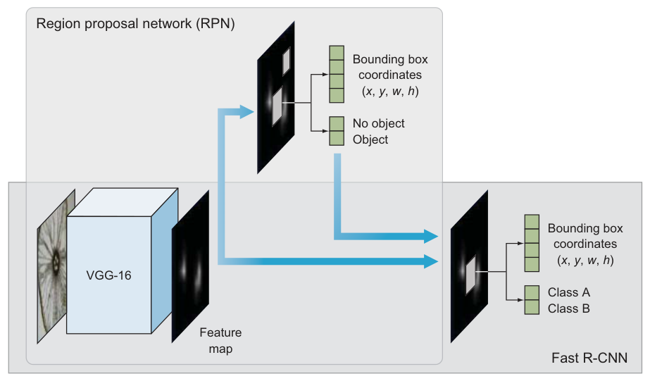
图 7.11 Faster R-CNN：RPN 找"可能含物体的区域"，Fast R-CNN 分类并微调框；两者共享 VGG16 的卷积层（截自原书）流程：输入图 → 预训练 CNN 提特征 → 特征并行送往两处：① RPN 判断图里哪儿可能有物体（此刻只知道"有"，不知道"是什么"）；② RoI Pooling 取固定尺寸特征窗口。然后过两个全连接层：一个输出类别，一个输出框坐标。五个组件全部进了网络内部：基网络、候选生成、RoI Pooling、分类、框回归——真正端到端。
基网络：随便换的"发动机"#
和 Fast R-CNN 一样，基网络 = 预训练 CNN 切掉分类头。原文用 ZF 和 VGG；现在按问题随便挑：
| 网络 | 参数量 | 特点 |
|---|---|---|
| MobileNet | 约 330 万 | 为速度优化的小网络 |
| ResNet-152 | 约 6,000 万 | 152 层，曾是 ImageNet 分类 SOTA |
| DenseNet | —— | 精度提升的同时参数更少 |
侧栏：VGGNet vs ResNet
如今 ResNet 基本取代 VGG 当基网络：层数更多（更深）→ 学习复杂特征的能力更强（分类如此，检测理应同样成立）；而且残差连接 + batch normalization 让深模型好训练——这两个东西 VGG 诞生时还没发明。详见第 5 章。
侧栏：全卷积网络（FCN）
检测网络的一个重要性质：全卷积（fully convolutional）——网络里没有全连接层。分类网络去 FC 层的常规做法：整个体上做 average pooling，再接一个 dense softmax。FCN 两大好处：更快（只有卷积运算）；输入分辨率任意（只要内存装得下）。FCN 使网络对输入尺寸不变——但实际中常仍用固定输入尺寸：要按批处理图像（GPU 并行加速）时，批内所有图必须同宽同高。
RPN：注意力机制式的候选网络#
RPN 基于基网络最后的特征图，找出可能含物体的区域——所以它也被叫作 attention network（注意力网络）：把网络的注意力引导到有意思的区域上。Faster R-CNN 用 RPN 把候选生成"烤"进 R-CNN 架构，替代外挂的 Selective Search。
RPN 由两层构成（图 7.12）：
- 一个 3×3 全卷积层（512 通道）——在特征图上滑 3×3 滑窗；
- 两个并行的 1×1 卷积层：一个分类层（这个区域有没有物体——前景/背景二分类），一个回归层（框预测）。
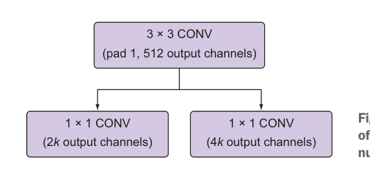
图 7.12 RPN 的卷积实现：3×3 中间层 + 两个 1×1 头，k 是 anchor 数（截自原书）重点澄清：RPN 的分类器和回归器不预测物体类别——那是后面 FC 层的事。RPN 只回答一个问题："这个区域里有没有物体？"它是二分类器，输出区域的 objectness score（前景/背景概率）。答"有"的区域才送去 RoI Pooling 和最终输出层（图 7.13）。
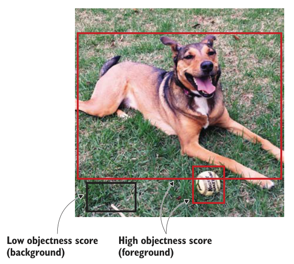
图 7.13 RPN 分类器输出 objectness score：含物体（前景）vs 背景（截自原书）侧栏：RPN 可以单独当应用用
单类别检测问题里，objectness 概率可直接当最终类别概率——前景就是"这一类"，背景就是"不是这一类"。用 RPN 单干图的是速度：它是个只用卷积层的极简网络，预测比带完整分类基网络的方案快。
Anchor boxes：回归的是"偏移量"，不是绝对坐标#
回归器怎么预测框？先看难点：直接回归中心点 \((x, y)\) 很麻烦——你得加规则强制网络把值预测在图像边界内。更聪明的做法：在图里铺一堆参考框（anchor boxes，锚框），让回归层预测相对锚框的偏移量（deltas） \((\Delta x, \Delta y, \Delta w, \Delta h)\)，把锚框调整到贴合物体，得到最终候选（图 7.14）。
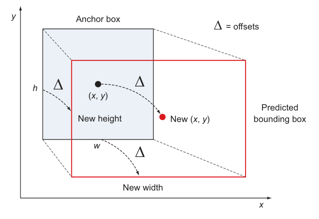
图 7.14 从 anchor box 出发预测 delta 偏移，得到预测边界框（截自原书）Anchor boxes：用滑窗方式，RPN 在特征图的每个位置生成 \(k\) 个候选区域，以滑窗中心为中心，尺度和长宽比各不相同，覆盖千奇百怪的物体形状。它们是预先铺好在图上的固定框，作为首次预测物体位置时的参考。原文（Ren et al.）用了 9 个 anchor：同一中心、3 种长宽比 × 3 种尺度。
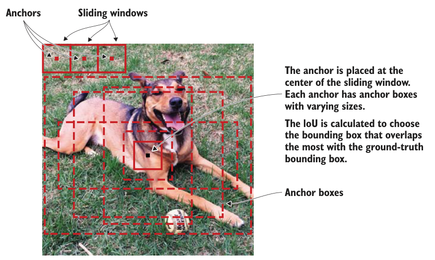
图 7.15 anchor 位于每个滑窗中心；IoU 用来挑出与真值框重叠最大的框（截自原书）训练 RPN#
RPN 学习给 anchor 分类（输出 objectness score）+ 逼近物体的 4 个坐标。训练用人工标注的真值框（ground truth）。对每个 anchor 算重叠概率 \(p\)（anchor 与真值框的 IoU）：
与真值框重叠大的 anchor 标为正样本（大概率含物体）；重叠小的标为负样本。
原书笔误
原书此处的分段函数把负样本标号排印成"1–"（即 −1）。结合上下文（"labeled as negative"）与 Ren et al. 原文（−1 表示忽略/负样本、0 表示不参与），这里应为 \(-1\)，分段含义是：IoU>0.7 → 正（+1），IoU<0.3 → 负（−1），中间地带 → 忽略（0）。
训练时，正负 anchor 被送进两个分支：anchor 二分类（有/无物体）+ 位置参数（4 坐标）回归。对应每个位置的 \(k\) 个 anchor，RPN 输出 \(2k\) 个得分和 \(4k\) 个坐标——\(k=9\) 时就是 18 个 objectness 得分 + 36 个坐标（图 7.16）。
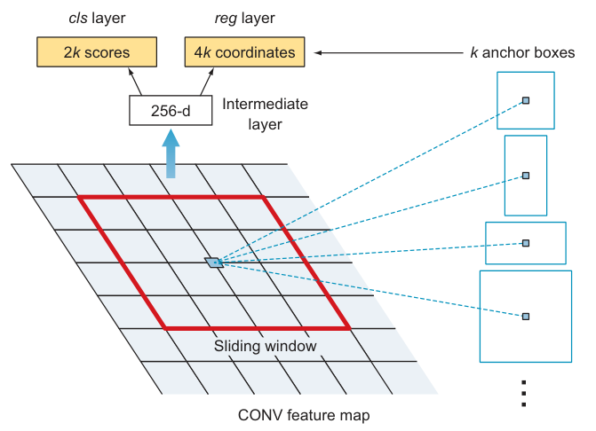
图 7.16 RPN 输出：中间层（图中为 256-d，对应 ZF 基网络；正文 512 通道对应 VGG）→ cls 层 2k 得分 + reg 层 4k 坐标（截自原书）全连接输出层#
最后的 FC 层吃两个输入：基 ConvNet 的特征图 + RPN 给的 RoI，输出每个选中区域的类别与框参数。分类用 softmax；框回归对坐标做线性回归。所有参数用多任务损失一起训练：
公式看着吓人，其实比长得简单（不想看可以跳过，不影响跑通 Faster R-CNN；但啃下来对"优化在底层怎么工作"的理解加深很多）。符号对照（表 7.2）：
| 符号 | 含义 |
|---|---|
| \(p_i\)、\(p_i^*\) | \(p_i\)：anchor \(i\) 是物体的预测概率；\(p_i^*\)：二值真值（0/1） |
| \(t_i\)、\(t_i^*\) | \(t_i\)：预测的 4 个框参数；\(t_i^*\)：真值参数 |
| \(N_{cls}\) | 分类损失的归一化项，Ren et al. 取 mini-batch 大小 ≈ 256 |
| \(N_{loc}\) | 回归损失的归一化项，Ren et al. 取 anchor 位置数 ≈ 2400 |
| \(L_{cls}\) | 二分类 log loss：\(-p_i^* \log p_i - (1-p_i^*)\log(1-p_i)\)（多分类问题在这里被转成"是不是目标物体"的二分类） |
| \(\mathrm{L1}_{smooth}\) | 框回归的 smooth L1 损失，稳健、对离群点不如 L2 敏感 |
| \(\lambda\) | 平衡参数，Ren et al. 取 ≈ 10（让 \(L_{cls}\) 与 \(L_{loc}\) 权重相当） |
先暂时忽略归一化项和求和下标 \((i)\)，单个实例的损失就是：
两项各看一眼：
- 分类损失 = 第 2 章讲的交叉熵，算预测概率 \(p\) 与真值 \(p^*\) 的误差，没新东西；
- 位置损失 = smooth L1 度量 \((t_i, t_i^*)\) 差异，再乘以真值概率 \(p^*\)——不是物体（\(p^*=0\)）就把整个位置损失清零，与 Fast R-CNN 的指示函数异曲同工。
两项相加 = 多任务损失。把 \((i)\) 和 \(\Sigma\) 放回去，就是对所有实例求和。
7.2.4 R-CNN 家族总结：一张表看懂演进#
表 7.3 是全章（也是全书）最值得背的一张表——同一任务，三代架构，速度差 250 倍：
| R-CNN | Fast R-CNN | Faster R-CNN | |
|---|---|---|---|
| mAP（PASCAL VOC 2007） | 66.0% | 66.9% | 66.9% |
| 单图测试时间 | 50 秒 | 2 秒 | 0.2 秒 |
| 相对 R-CNN 加速 | 1× | 25× | 250× |
| 候选生成 | Selective Search 提约 2,000 个 RoI | Selective Search 提约 2,000 个 RoI | RPN（网络自己提） |
| CNN 使用方式 | 每个候选区域各自过一遍 ConvNet | 整图过一次 CNN，在特征图上取候选 | 整图过一次 CNN，与 RPN 共享卷积层 |
| 分类方式 | 线性 SVM（另训） | 单个 softmax（网络内） | softmax（网络内） |
| 端到端？ | 否（三模块分别训） | 半（候选仍靠外部算法） | 是（完全端到端 DL 网络） |
| 短板 | 计算量大（无共享计算）+ 三个模型 | Selective Search 慢，计算仍高 | 候选生成仍花时间；多系统串行，性能受前级牵制 |
拓展：为什么单阶段快、两阶段准？（RoI 的作用）
两阶段的精髓在 RoI 是一道"看清楚再答"的筛选闸门：RPN 先用廉价的二分类把几千个位置粗筛成几百个"高嫌疑"区域，每个区域再被裁成固定尺寸的特征送进重量级分类头细看——计算花在刀刃上，分类头见到的都是"值得细看"的候选，所以精度高。单阶段砍掉这道闸门，在稠密的位置采样上（SSD 8,732 个 / YOLO 10,647 个框）一次性出全部预测——省掉了"先粗筛再细看"的串行两步，自然快；但成千上万个框里绝大多数是背景，正负样本严重失衡，训练难度大、精度略降。一句话：两阶段用"稀疏候选 + 精分类"换准，单阶段用"稠密预测 + 一把梭"换快。
R-CNN 家族的遗留问题（每一代都在修上一代，但都没做到实时）：
- 训练笨重、耗时过长；
- 训练分多个阶段（候选生成 vs 分类器分开训）;
- 推理太慢。
解决之道就是砍掉 region proposal 阶段——单阶段检测器（one-stage detector）：
- 两阶段（R-CNN 家族）：① 用 Selective Search 或 RPN 提 RoI——候选是稀疏的（潜在的边界框候选是无穷多的）；② 分类器只处理这些候选。
- 单阶段（SSD、YOLO）：跳过候选阶段，直接在稠密采样的可能位置上跑检测。更快更简单，但精度可能略降。
一般来说：单阶段不如两阶段准，但显著更快。 下面两节分别看 SSD 和 YOLO。
7.3 单发多框检测器（SSD）#
SSD（Single Shot MultiBox Detector）由 Wei Liu 等人于 2016 年发布（arXiv:1512.02325），在 PASCAL VOC、MS COCO 等标准数据集上刷出 74.3% mAP @ 59 FPS 的新纪录。
R-CNN 家族是多阶段的：先预测框的 objectness score，再把框送进分类器。单阶段检测器（SSD、YOLO）里，卷积层直接"一发"同时做两个预测——名字里的 single shot 就是这么来的。图像只过一次网络，每个框的 objectness score 用 logistic 回归预测，表示它与真值的重叠程度：重叠 100% → 得分 1，零重叠 → 得分 0。再设阈值 0.5：得分高于 50% 的框判定"大概率有目标"，出预测；低于则忽略。
侧栏：FPS 怎么读
Faster R-CNN 只有 7 FPS。多年来大家从流水线的每个环节下手提速，但速度大涨往往以精度大跌为代价——本节会看到 SSD 为什么能两全。基准数据：SSD300（输入 300×300）74.3% mAP @ 59 FPS；SSD512（输入 512×512）76.8% mAP @ 22 FPS；Faster R-CNN 73.2% mAP @ 7 FPS。（SSD300/512 的数字指输入边长。）
7.3.1 SSD 高层架构：一个前馈网络 + 一堆框#
SSD 基于一个前馈卷积网络：产出固定数量的边界框 + 每框含物体的类别得分，最后接 NMS 得到最终检测。三大部件：
- 基网络（base network）提特征图：标准预训练分类网络，切掉分类层。原文用 VGG16；VGG19、ResNet 也行，效果应当不差；
- 多尺度特征层（multi-scale feature layers）：在基网络后接一系列卷积层，尺寸逐层递减，实现多尺度检测；
- NMS：去掉重叠框，每个物体留一个。
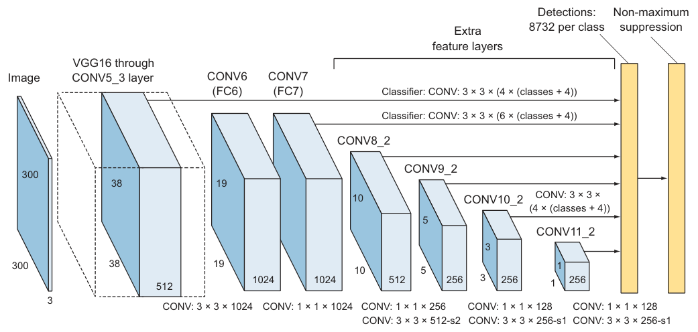
图 7.17 SSD 架构：VGG16 基网络 + 额外特征层，conv4_3、7、8_2、9_2、10_2、11_2 六层直接向 NMS 供框（截自原书）看图 7.17：预测来自 conv4_3、conv7、conv8_2、conv9_2、conv10_2、conv11_2 六层（尺寸 38/19/10/5/3/1），每层先过一个小 3×3 卷积做检测，网络对每个类别共输出 8,732 个候选框，再由 NMS 压到每物体一个。8732 是怎么算出来的？
每层特征图的每个位置放若干个框（类似 anchor，SSD 里叫 default box）。以 conv4_3（尺寸 38×38×512）为例：3×3 卷积在 38×38=1,444 个位置各出 4 个框——图 7.17 顶部标注的 CONV: 3×3×(4×(classes+4)) 意思是每框输出 \(4+\) 类数个通道（4 个框值 + 各类概率）。框数算术：
| 预测来源层 | 特征图尺寸 | 每位置框数 | 框数 |
|---|---|---|---|
| conv4_3 | 38×38 | 4 | 38×38×4 = 5,776 |
| conv7 | 19×19 | 6 | 19×19×6 = 2,166 |
| conv8_2 | 10×10 | 6 | 10×10×6 = 600 |
| conv9_2 | 5×5 | 6 | 5×5×6 = 150 |
| conv10_2 | 3×3 | 4 | 3×3×4 = 36 |
| conv11_2 | 1×1 | 4 | 1×1×4 = 4 |
| 合计 | 8,732 |
实算核对：5776 + 2166 + 600 + 150 + 36 + 4 = 8732，成立。注意两点：① 小特征图（conv10_2、conv11_2）每位置框数反而少（4 个）——它们负责大物体；② 8732 是"每个类别"的框数，NMS 要逐类做。
原书笔误：conv8_2 / conv9_2 的 padding
书中 Keras 代码把 conv8_2、conv9_2 写成 padding='valid'，但 8732 的分解要求特征图尺寸为 38/19/10/5/3/1——用 valid 算一遍就露馅：conv8_2 从 19×19 经 3×3 步幅 2，valid 得 9×9（\(\lfloor(19-3)/2\rfloor+1\)），same（pad=1）才得 10×10；conv9_2 同理，valid 得 4×4，same 才得 5×5。而后两层 conv10_2、conv11_2 是步幅 1，valid 恰好算出 3×3 与 1×1，与原书一致（对应 Caffe 原版实现的 pad 0）。结论：conv8_2/conv9_2 按 padding=1（same）讲，conv10_2/conv11_2 保持 valid，下节代码已按此修正。
**每个框的预测长什么样？**每个预测输出：
- 4 个值描述边界框 \((x, y, w, h)\)；
- 1 个 objectness score；
- \(C\) 个类别概率。
合计 \(5 + C\) 个值。若问题有 4 个物体类，每条预测就是向量 \([x, y, w, h, \text{obj}, C_1, C_2, C_3, C_4]\)。
7.3.2 基网络：切掉头的 VGG16#
SSD 的基网络是 VGG16 切掉全连接分类层（VGG16 详见第 5 章）。选它是因为分类性能强、迁移学习生态成熟。原 FC 层的位置换成一组辅助卷积层（conv6 起），逐层缩小特征图尺寸，实现多尺度特征提取。书里给了 Keras 版 VGG16 前段（证明"这就是第 5 章那个 VGG16"），PyTorch 等价：
# ===== 书 7.3.2 节 SSD 的 VGG16 基网络（Keras 原文 → PyTorch）=====
import torch.nn as nn
def vgg16_base():
layers = []
cfgs = [64, 64, 'M', 128, 128, 'M', 256, 256, 256, 'M',
512, 512, 512, 'M', 512, 512, 512] # 'M' = 2×2 步幅 2 最大池化
in_ch = 3
for v in cfgs:
if v == 'M':
layers.append(nn.MaxPool2d(2, 2, ceil_mode=True)) # ceil: 75/2→38
else:
layers += [nn.Conv2d(in_ch, v, 3, padding=1), nn.ReLU(inplace=True)]
in_ch = v
# 第 5 章同款 VGG16；注意两点（书强调）：
# conv4_3 之后接 pool4 —— conv4_3 的输出会被再次用来直接出预测；
# pool5 用 3×3、步幅 1 的池化（下方手动替换），输出送 conv6。
layers[-1] = nn.MaxPool2d(3, 1, 1) # pool5: kernel 3, stride 1, pad 1
return nn.Sequential(*layers) # 300×300 输入 → conv4_3: 38×38×512 → pool5: 19×19×512
两个关键点（书明确强调）：conv4_3 会被再次用来直接出预测（它是六个预测层之一）；pool5 的输出喂给 conv6——多尺度特征层的第一层。
基网络怎么出预测：prior + 逐框提问#
书里的"轮船"例子（图 7.18）把流程讲得很直白：
- 与 R-CNN 的 anchor 类似，SSD 在图上铺一张 prior 网格（SSD 把 anchor 叫 prior（先验框））。每个 prior 中心生成一组候选框；
- 基网络把每个候选框当独立小图，逐框问："这个框里有船吗？"——即"我在这个框里提取到船特征了吗？"
- 找到船特征的框，其坐标预测 + 类别预测被送往 NMS 层；
- NMS 删掉所有框，只留与真值框重叠最大的那个。
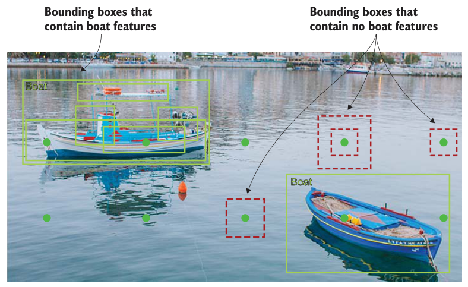
图 7.18 实线框 = 网络找到了船特征；虚线框 = 没有（截自原书）侧栏：基网络可以换
Liu et al. 用 VGG16 因为它分类强。换更深的 VGG19 或 ResNet 精度只会更好，但更慢。想要"精度-速度"平衡，MobileNet 是好选择。
7.3.3 多尺度特征层：小框看小物，大框看大物#
多尺度层接在被截断的基网络尾部，尺寸逐层递减。**为什么要多尺度？**看图 7.19 的马：远景的马小，容易整个装进 prior 里，基网络能检出；离镜头最近的那匹马太大——把它的一个候选框单独抠出来（图 7.20），你能看出马的特征吗？看不出。
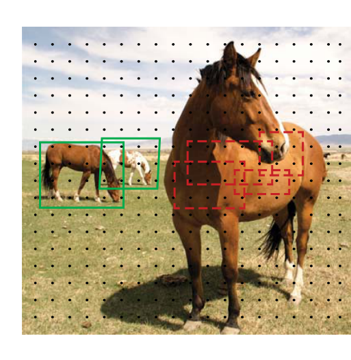
图 7.19 远处的马装得进 prior（绿实线框），最近的马需要另一种尺度的 prior 才能盖住可识别特征（截自原书）一种老办法是把图像预处理成多个尺寸分别推理再合并结果。SSD 的做法更高明：用网络里多个不同尺寸的特征层模拟同样的效果，还跨尺度共享参数。CNN 逐层缩小空间维度、降低分辨率——用低分辨率特征图检测大物体（如 4×4 特征图），高分辨率特征图检测小物体：
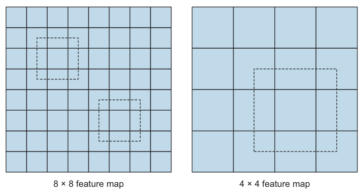
图 7.21 左：8×8 高分辨率特征图检小物体；右：4×4 低分辨率特征图检大物体（截自原书）直觉想象：多尺度层把图像"缩小"到马能装进框里（图 7.22）。实际当然不是真缩小图像——图像经过卷积后早就面目全非，但特征保留（卷积原理见第 3 章）。多尺度带来的精度提升非常显著（图 7.23）：
| 预测来源层 | mAP（用边界框） | mAP（不用） | 框数 |
|---|---|---|---|
| conv4_3, conv7, conv8_2, conv9_2, conv10_2, conv11_2（全部六层） | 74.3 | 63.4 | 8,732 |
| 去掉 conv4_3（五层） | 74.6 | 63.1 | 8,764 |
| conv7 起（四层） | 73.8 | 68.4 | 8,942 |
| conv8_2 起（三层） | 70.7 | 69.2 | 9,864 |
| conv9_2 起（两层） | 64.2 | 64.4 | 9,025 |
| 仅 conv7（一层） | 62.4 | 64.0 | 8,664 |
只用 conv7 一层时表现最差（62.4%）——把不同尺度的框摊到不同层上，是 SSD 精度的命根子。
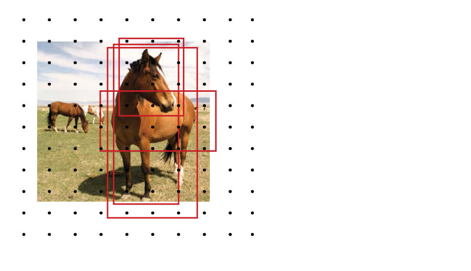
图 7.22 多尺度层"缩小"空间维度后，新 prior 相当于拉远视角，盖住了近处那匹马的可识别特征（截自原书）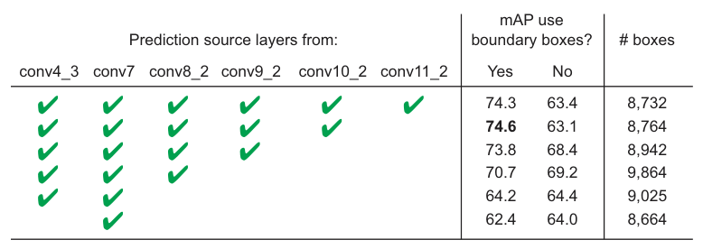
图 7.23 原文实验：预测来源层越多 mAP 越高（截自原书）多尺度层的结构#
Liu et al. 加了六个尺寸递减的卷积层（大量调参试错的结果）。conv6 是 3×3，conv7 是 1×1；conv8~conv11 每个是"块"：1×1 降通道 + 3×3 降尺寸 两层一组。Keras 原文（含上面说的 padding 笔误）转 PyTorch：
# ===== 书 7.3.3 节 SSD 多尺度特征层（Keras 原文 → PyTorch，已修正 padding）=====
import torch
import torch.nn as nn
extra_layers = nn.ModuleList([
# conv6：3×3、膨胀率 6 的空洞卷积（atrous），1024 通道
nn.Conv2d(512, 1024, 3, padding=6, dilation=6), nn.ReLU(inplace=True),
# conv7：1×1 降维
nn.Conv2d(1024, 1024, 1), nn.ReLU(inplace=True),
# conv8 块：1×1 降通道 → 3×3 步幅 2 降尺寸（原书此处 padding='valid' 系笔误，应 pad 1：19→10）
nn.Conv2d(1024, 256, 1), nn.ReLU(inplace=True),
nn.Conv2d(256, 512, 3, stride=2, padding=1), nn.ReLU(inplace=True),
# conv9 块：同上（10→5，需 pad 1；原书 'valid' 笔误）
nn.Conv2d(512, 128, 1), nn.ReLU(inplace=True),
nn.Conv2d(128, 256, 3, stride=2, padding=1), nn.ReLU(inplace=True),
# conv10 块：步幅 1，valid（5→3）与原书一致
nn.Conv2d(256, 128, 1), nn.ReLU(inplace=True),
nn.Conv2d(128, 256, 3), nn.ReLU(inplace=True),
# conv11 块：步幅 1，valid（3→1）与原书一致
nn.Conv2d(256, 128, 1), nn.ReLU(inplace=True),
nn.Conv2d(128, 256, 3), nn.ReLU(inplace=True),
])
# 输入 300×300，各层输出尺寸：conv6/7: 19×19 → conv8_2: 10×10 → conv9_2: 5×5
# → conv10_2: 3×3 → conv11_2: 1×1 （38 来自 conv4_3）
书里的原话："不做科研的话，你大概率不需要自己实现检测架构——下载开源实现改造即可。"这些代码块的意义是帮你把层结构内化。
侧栏：空洞（膨胀）卷积 Atrous / Dilated Convolutions
给卷积层加一个膨胀率（dilation rate）参数：定义核内取值的间隔。3×3 核、膨胀率 2 → 感受野等价 5×5，参数仍只要 9 个——想象把 5×5 核每隔一行一列删掉一个值。同样的计算代价换来更宽的视野，在实时分割领域特别流行；需要大视野又用不起多层卷积或大核时用它。Keras 写法：Conv2D(1024, (3,3), dilation_rate=(2,2), padding='same')。SSD 的 conv6 用的是膨胀率 6。
Default boxes 的生成（可运行实现，实算验证 8732）#
# ===== 书 7.3.1/7.3.3 default box 生成（核心逻辑，实算 = 8732）=====
import itertools, math
def default_boxes(feature_sizes=(38, 19, 10, 5, 3, 1),
n_boxes=(4, 6, 6, 4, 4, 4),
scales=None):
"""SSD300 六个预测层的 default box：返回 8732 个 (cx, cy, w, h)"""
if scales is None: # SSD300：0.1→0.9 线性分度（书 7.5 项目 SSD7 用显式列表，口径相同）
scales = [0.1 + 0.8 * k / 6 for k in range(7)] # 7 个分点覆盖 6 层
# 4 框层长宽比 (1, 2, 1/2)；6 框层再加 (3, 1/3)；每位置最后附加一个 sqrt(s·s') 方框
ars_per_layer = ((1, 2, 1/2), (1, 2, 1/2, 3, 1/3), (1, 2, 1/2, 3, 1/3),
(1, 2, 1/2, 3, 1/3), (1, 2, 1/2), (1, 2, 1/2))
dboxes = []
for li, (fk, nb, ars) in enumerate(zip(feature_sizes, n_boxes, ars_per_layer)):
s, s_next = scales[li], scales[li + 1] # 本层 / 下一层尺度
for i, j in itertools.product(range(fk), repeat=2): # 遍历每个位置
cx, cy = (j + 0.5) / fk, (i + 0.5) / fk # 位置中心（归一化）
for ar in ars: # 各长宽比
dboxes.append([cx, cy, s * math.sqrt(ar), s / math.sqrt(ar)])
s2 = math.sqrt(s * s_next) # 附加方框：ar=1 的第二尺度
dboxes.append([cx, cy, s2, s2])
return dboxes
db = default_boxes()
print(len(db)) # 8732 = 38²·4 + 19²·6 + 10²·6 + 5²·6 + 3²·4 + 1²·4
7.3.4 SSD 的 NMS：8732 → 200#
推理时每类 8,732 个框涌出来，必须用 NMS 大幅剪枝：置信度和 IoU 低于阈值的框丢弃，只留 top N。SSD 的做法：按置信度排序，从最高分开始，逐个检查是否有同类别、IoU 超过阈值的高分框已经"占位"——有就忽略当前框（它俩大概率框的同一个物体）。IoU 阈值可调，Liu et al. 选 0.45；每图最多保留 top 200 个预测。
解码 + NMS 的核心代码（解码用 PyTorch 张量，NMS 复用 7.1.3 的 numpy 实现）：
# ===== 书 7.3.4 SSD 解码 + NMS（numpy，单类演示）=====
import numpy as np
def decode(dboxes, offsets, variances=(0.1, 0.2)):
"""把网络输出的偏移量解码回真实框坐标 (cx, cy, w, h)
dboxes: (M,4) default box；offsets: (M,4) 网络原始输出
（SSD 论文常用 (0.1, 0.2)；书 7.5 项目里 variances=[1,1,1,1]，即不缩放）"""
cx = dboxes[:, 0] + variances[0] * offsets[:, 0] * dboxes[:, 2] # 中心：cx + t_x·w
cy = dboxes[:, 1] + variances[0] * offsets[:, 1] * dboxes[:, 3]
w = dboxes[:, 2] * torch.exp(variances[1] * offsets[:, 2]) # 宽高：w·exp(t_w)
h = dboxes[:, 3] * torch.exp(variances[1] * offsets[:, 3])
return torch.stack([cx, cy, w, h], dim=1)
def ssd_postprocess(scores, boxes, conf_thresh=0.01, iou_thresh=0.45, top_k=200):
keep = scores > conf_thresh # 置信度过滤（书取 0.01 起筛）
boxes, scores = boxes[keep], scores[keep]
order = scores.argsort(descending=True)[:top_k] # 只看 top_k
boxes, scores = boxes[order], scores[order]
keep = nms(boxes.numpy(), scores.numpy(), # 复用 7.1.3 的 numpy NMS
conf_thresh=-1, nms_thresh=iou_thresh)[0] # iou 阈值 0.45（Liu et al.）
return len(keep) # 每图最多保留 top 200 个预测
7.4 YOLO：你只看一次#
**YOLO（You Only Look Once）**是 Joseph Redmon 等人开创的检测网络家族，一路演进：
| 版本 | 年份 | 关键词 |
|---|---|---|
| YOLOv1 | 2016 | "unified, real-time object detection"——单一网络统一"候选 + 分类"两个组件（arXiv:1506.02640） |
| YOLOv2（YOLO9000） | 2016 | 能检 9,000+ 种物体（ImageNet + COCO 训练）；16% mAP 不算好，但测试极快（arXiv:1612.08242） |
| YOLOv3 | 2018 | 模型显著变大，mAP 57.9%——YOLO 家族的最好成绩（arXiv:1804.02767） |
YOLO 家族是第一批"快到实时"的端到端检测模型之一。精度接近但不如 R-CNN，但胜在速度——实时视频/摄像头输入里最常露脸的就是它。
核心思路与 R-CNN 家族彻底分道扬镳：不做 region proposal。把输入图切成网格（grid of cells），每个格子直接预测少量边界框 + 分类，产出的大量候选框再用 NMS 收敛成最终预测（图 7.26）。v1 提出总体架构，v2 引入预定义 anchor box 改进框质量，v3 进一步精修架构与训练。本节聚焦 v3（写书时的家族 SOTA）。
7.4.1 YOLOv3 怎么工作：网格 + 每格 B 框#
网络把输入图切成 \(S \times S\) 个格子。真值框的中心落在哪个格子，哪个格子就负责检测这个物体。每个格子预测 \(B\) 个边界框，每框输出：
- 框坐标 \((b_x, b_y, b_w, b_h)\)——\(x, y\) 是相对格子位置的偏移量；
- objectness score（\(P_o\)）：格子含物体的概率，过 sigmoid 压到 0~1。计算方式是"含物体概率 × 预测框与真值的 IoU"：
- 类别预测：框里有物体时，输出 \(K\) 个类别的概率（\(K\) = 问题类别数）。
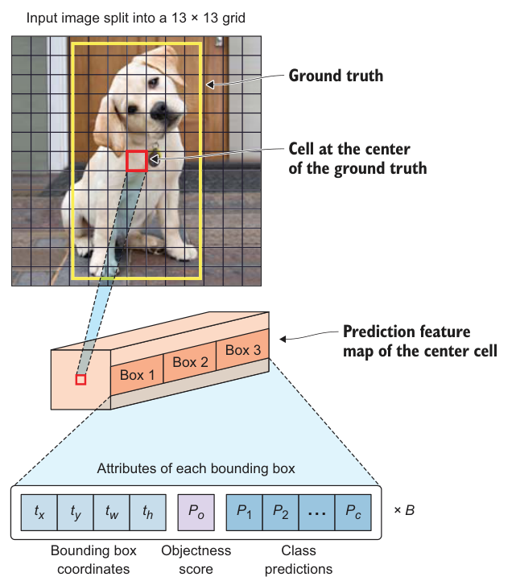
图 7.26 输入切成 13×13 网格（169 格）；真值框中心的格子出 3 个框（B=3），每框 = 坐标 + objectness + 类别（截自原书）总预测值数量：每框 \(4 + 1 + K\) 个值，每格 \(B\) 框，共 \(S \times S\) 格：
v3 的一个重要改动：v3 之前类别得分用 softmax——softmax 隐含"每个框只属于一个类"的假设（属于 A 就必不属于 B）。对某些数据集成立，但遇到 Woman 与 Person 这种标签就翻车（一个人可以同时是两者）。v3 改用 sigmoid 逐类打分，多标签建模更贴近数据。
多尺度预测：为什么每格 3 个框#
图 7.26 里预测特征图有 3 个框——与 SSD 的 prior 类似，YOLOv3 有 9 个 anchor，每个格子在每个尺度出 3 个框。检测层在三个不同尺寸的特征图上做检测，步幅（stride）分别为 32、16、8：输入 416×416 时，就是在 13×13、26×26、52×52 三个网格上检测（图 7.27）——13×13 负责大物体，26×26 负责中物体，52×52 负责小物体。负责检出狗的框，是与真值框 IoU 最高的那个 anchor 对应的框。
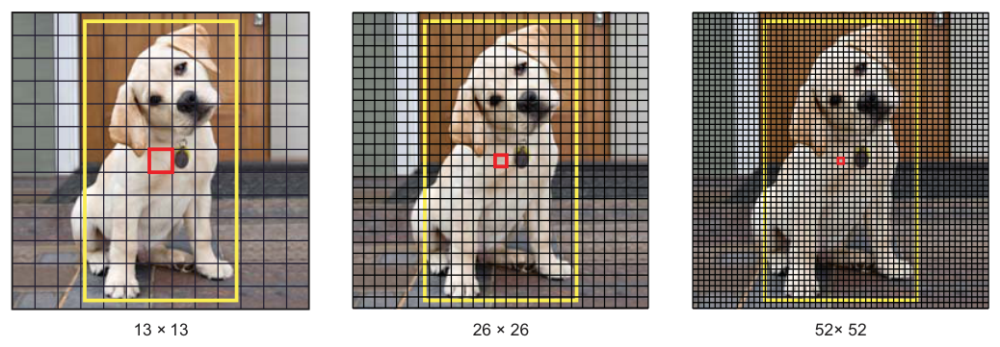
图 7.27 三个尺度的预测特征图：13×13 / 26×26 / 52×52（截自原书）侧栏：多尺度是为了救小物体
小物体检测是 YOLOv2 的重灾区。上采样（upsampling）层帮网络保留并学习细粒度特征——这正是检出小物体的关键。流程：输入不断下采样到 stride 32 的层出第一个检测；特征图 2× 上采样，与前面同尺寸的特征图拼接（concatenate），在 stride 16 出第二个检测；再上采样一次，在 stride 8 出第三个。
拓展：YOLO 的 10647 个框别数错
书中口径：输入 416×416 时，YOLOv3 预测 \((52 \times 52) + (26 \times 26) + (13 \times 13)) \times 3 = 10{,}647\) 个边界框——实算 \((2704 + 676 + 169) \times 3 = 3549 \times 3 = 10647\)，成立。容易误读成"13×13×3"（那是 507，只是单个尺度的框数；10647 是三个尺度之和）。按 7.4.1 的 \(S \times S \times (5B + K)\) 公式看单个尺度的输出张量：COCO 80 类时，13×13 尺度输出 \(13 \times 13 \times (3 \times (4+1+80))\) 的特征图，三个尺度张量里的"框槽位"加起来正是 10647。接下来老套路：先按 objectness 过滤，再用 NMS 消掉同一物体的重复检测（同一个格子的 3 个框可能都命中，相邻格子也可能框同一个物体）。
YOLOv1 的框数（顺带对照）#
SSD 一节提过：YOLOv1 最后是 7×7 个位置、每位置 2 个框：\(7 \times 7 \times 2 = 98\) 个框。从 v1 的 98 框到 v3 的 10,647 框，"稠密预测"的密度翻了百倍。
7.4.2 YOLOv3 架构：Darknet-53#
YOLO 是把检测 + 分类统一进一个端到端网络的单网络。特征提取器的灵感来自 GoogLeNet（Inception）：不用 Inception 模块，而是 1×1 降维层 + 3×3 卷积层的组合——Redmon 和 Farhadi 管它叫 DarkNet（图 7.28）。
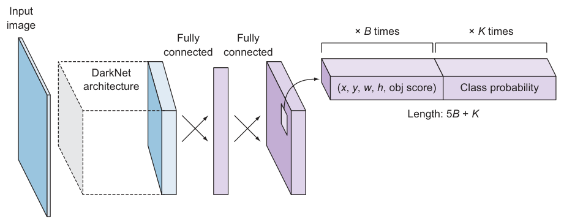
图 7.28 YOLO 高层架构：DarkNet 特征 → FC → 输出长度 5B+K 的预测 × B 框 × K 类（截自原书）代际对比：
- YOLOv2：自定义深架构 darknet-19（19 层）+ 检测用的 11 层 = 30 层。小物体检测常翻车——下采样丢失细粒度特征。而且缺三样如今 SOTA 的标配：无残差块、无跳跃连接、无上采样。
- YOLOv3：全部补齐。基网络 Darknet-53（53 层，ImageNet 训练），检测任务再叠 53 层，共 106 层全卷积架构。这也是 v3 比 v2 慢的原因——换来检测精度大涨。
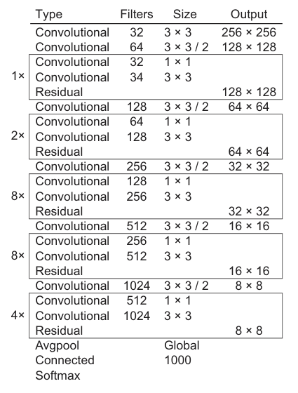
图 7.29 Darknet-53 特征提取器：卷积 + 残差块（1×/2×/8×/8×/4× 组）+ 全局池化 + 1000 类 softmax（截自原书）原书笔误：Darknet-53 表中的 '34' 个滤波器
图 7.29 中第一个残差块（1× 组）的第二层滤波器数印作 34，按 Redmon 原论文应为 64（32@1×1 → 64@3×3，残差输出 128×128 空间尺寸）。
完整架构：三个检测头怎么接#
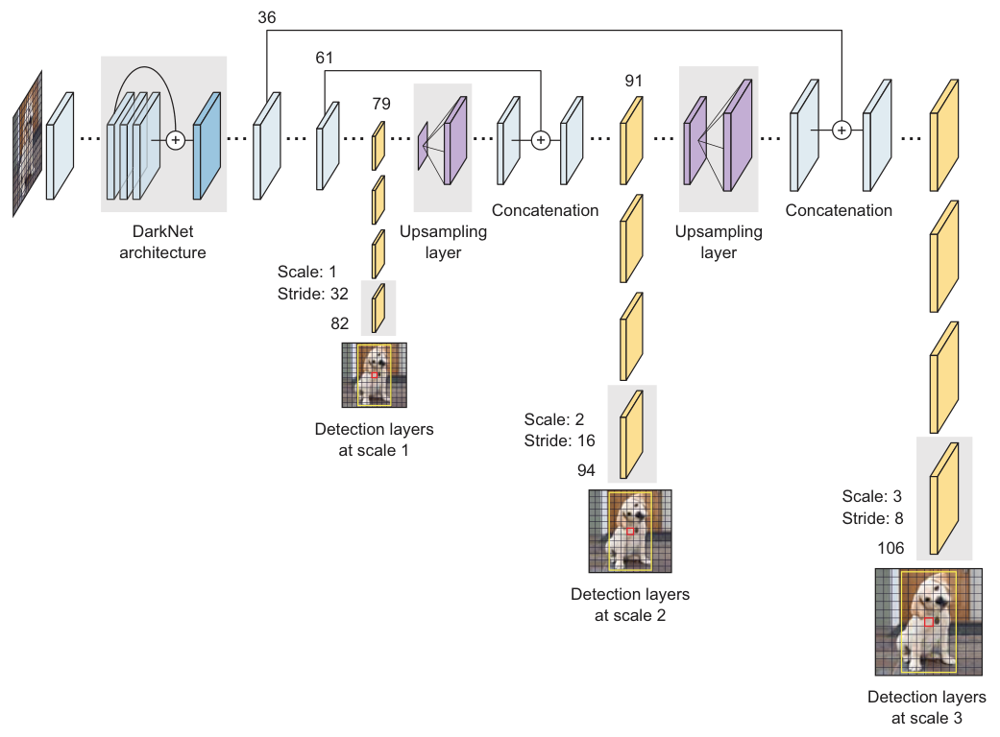
图 7.30 YOLOv3 全架构：Darknet 主干下采样至层 79 后分三路，分别在层 82/94/106 出三个尺度的检测（截自原书）对照图 7.30 走一遍数据流：
- 输入图过 Darknet-53 一路下采样到层 79；网络继续下采样，在层 82 出第一个检测——13×13 网格，负责大物体；
- 层 79 的特征图 2× 上采样到 26×26，与层 61 的特征图拼接；层 94 出第二个检测——26×26，负责中物体；
- 同样的流程再来一遍：层 91 的特征图过几个上采样卷积层，与层 36 的特征图深度拼接；层 106 出第三个检测——52×52，负责小物体。
SSD vs YOLO：同门不同路#
两者都是单阶段检测器，都是"稠密预测 + NMS 收尾"，但设计取舍不同——这张对比表是本章第二个必背表：
| SSD | YOLOv3 | |
|---|---|---|
| 发表 | Liu et al., 2016 | Redmon & Farhadi, 2018（家族始于 v1, 2016） |
| 候选生成 | 无（单阶段），prior 网格 | 无（单阶段），S×S 网格 + anchor |
| 预测位置 | 6 层多尺度特征图（38/19/10/5/3/1） | 3 个尺度（stride 32/16/8 → 13/26/52） |
| 每位置框数 | 4 或 6 个 default box | 每格每尺度 3 个（9 个 anchor） |
| 候选框总数 | 8,732 个/类（300×300 输入） | 10,647 个（416×416 输入，三尺度合计） |
| 每框输出 | \(5 + C\)（4 坐标 + 1 objectness + C 类） | \(5B + K\) 每格；每框 \(4+1+K\) |
| 类别得分 | softmax | sigmoid（多标签，v3 起） |
| 精度 | 74.3% mAP @ 59 FPS（SSD300）；76.8% @ 22 FPS（SSD512） | 57.9% mAP（v3，YOLO 家族最佳） |
| 小物体 | 靠多尺度低分辨率特征图 | 靠上采样 + 拼接保细粒度特征（v2 痛点） |
| NMS 参数 | IoU 阈值 0.45，top 200 | objectness 过滤 + NMS |
7.5 项目：自动驾驶场景训练 SSD#
本章项目用 SSD7——SSD300 的七层精简版：刻意不优化的架构，目标是在个人电脑上快速训完（作者在 CPU 上跑了约 20 小时，GPU 会快得多）。代码基于 Pierluigi Ferrari 的 ssd_keras 仓库改造，书配套代码可下载。
数据集：Udacity 自动驾驶数据集（github.com/udacity/self-driving-car）——22,000+ 张已标注图像、5 个类别（car、truck、pedestrian、bicyclist、traffic light），全部缩放到 300×480。这些是白天在加州 Mountain View 真实行车拍的，没有做过任何清理——真实感正是它的价值。标签由 CrowdAI 和 Autti 完成，CSV 格式：xmin, xmax, ymin, ymax, class_id, frame（框坐标 + 类别 + 文件名）。
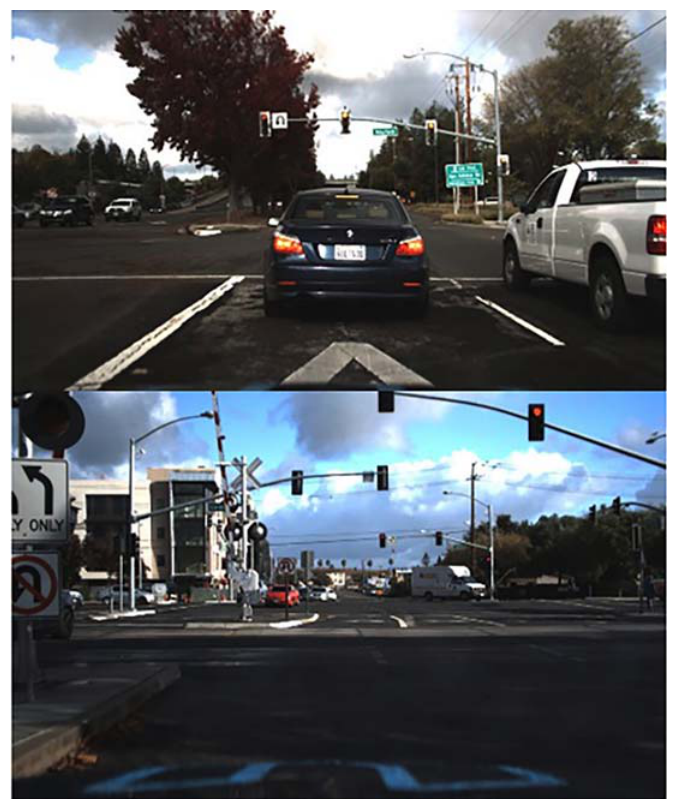
图 7.31 Udacity 数据集样例：红绿灯、路口、卡车、铁路道口（截自原书，© 2016 Udacity, MIT License）侧栏：自己标注数据用 LabelImg
要标注自己的数据，开源工具 LabelImg（pypi.org/project/labelImg）安装即用。
七步走（原书 Keras 流程 → 每步给 PyTorch 等价骨架）：
第 1 步：构建模型#
keras_ssd7.py 的 build_model()：卷积特征层 + 若干从不同特征层取输入的卷积预测层（就是 7.3 的结构）。关键参数：mode='training'、l2_regularization、min_scale=0.1 / max_scale=0.9（或显式 scales 列表覆盖）、aspect_ratios_global=[0.5, 1.0, 2.0]、two_boxes_for_ar1=True（长宽比 1 出两个框）、clip_boxes=False、variances=[1.0, 1.0, 1.0, 1.0]（编码目标坐标的缩放方差）、coords='centroids'、normalize_coords=False、confidence_thresh=0.01、iou_threshold=0.45、top_k=200、nms_max_output_size=400。
第 2 步：模型配置#
# ===== 书 7.5.2 配置（超参与书一致）=====
img_height, img_width, img_channels = 300, 480, 3 # 数据集已是 300×480
intensity_mean, intensity_range = 127.5, 127.5 # 像素值归一到 [-1, 1]
n_classes = 5 # 5 个正类（class_id=0 永远留给背景）
scales = [0.08, 0.16, 0.32, 0.64, 0.96] # 显式 anchor 缩放因子（覆盖 min/max_scale）
aspect_ratios = [0.5, 1.0, 2.0] # anchor 长宽比
two_boxes_for_ar1 = True # 长宽比 1 时出两个框（一个平方 s，一个 sqrt(s·s')）
clip_boxes = False # anchor 不裁剪到图像边界内
variances = [1.0, 1.0, 1.0, 1.0] # 目标坐标编码的方差（本项目全取 1）
normalize_coords = True # 坐标相对图像尺寸归一化
第 3 步：创建模型 + 优化器 + 损失#
# ===== 书 7.5.3 训练超参（Adam 1e-3；SSDLoss(neg_pos_ratio=3, alpha=1.0)）=====
# Keras 原文：build_model(..., l2_regularization=0.0005, subtract_mean=127.5,
# divide_by_stddev=127.5) + Adam(lr=0.001) + SSDLoss
import torch
model = build_ssd7(n_classes=5, l2_regularization=0.0005) # 结构同 7.3 节 PyTorch 实现
optimizer = torch.optim.Adam(model.parameters(), lr=0.001, # 书：lr=0.001
betas=(0.9, 0.999), eps=1e-08) # beta1/beta2/epsilon 同书
# 可选：加载已保存权重 model.load_state_dict(torch.load('<path/to/model.pt>'), strict=False)
def ssd_loss(cls_pred, loc_pred, cls_target, loc_target,
neg_pos_ratio=3, alpha=1.0):
"""SSD 多任务损失：分类 log loss + alpha·smooth L1 定位损失。
neg_pos_ratio=3、alpha=1.0 按 SSD 论文（Liu et al., 2016）设定。"""
l_cls = F.cross_entropy(cls_pred, cls_target, reduction='sum')
pos = cls_target > 0 # 只对正样本算定位损失
l_loc = F.smooth_l1_loss(loc_pred[pos], loc_target[pos], reduction='sum')
return (l_cls + alpha * l_loc) / max(pos.sum(), 1) # 按正样本数归一
拓展：hard negative mining 是什么？
8,732 个框里 99% 是背景——负样本严重过剩，直接训练会被背景淹没。SSD 的解法就是损失里的 neg_pos_ratio=3：每个 batch 先按分类损失给所有负样本排序，只保留"损失最大"（最难分、最容易误判成正样本）的3 倍于正样本数的负样本参与损失——正负样本比固定在 1:3。这就是 hard negative mining（难例挖掘）：不学平庸的背景，专攻长得像物体的背景。alpha=1.0 则是定位损失相对分类损失的权重。
第 4 步：加载数据#
Keras 流程：实例化两个 DataGenerator（训练/验证）→ parse_csv 读图像目录 + 标签 CSV（格式 ['image_name', 'xmin', 'xmax', 'ymin', 'ymax', 'class_id']）→ 打印数据集规模：训练 18,000 张 / 验证 4,241 张。数据增强链（DataAugmentationConstantInputSize）：随机亮度 ±48、随机对比度 0.5~1.8、随机饱和度 0.5~1.8、随机色相 ±18、随机翻转 0.5、随机平移、随机缩放 0.5~2.0（各以 0.5 概率施加），框随图变换并被裁剪过滤（clip_boxes=True、bounds_box_filter=(0.3, 1.0)、n_boxes_min=1）。
再实例化编码器 SSDInputEncoder：把真值标签编码成 SSD 损失需要的格式——按 matching_type='multi' 匹配 default box（pos_iou_threshold=0.5：IoU≥0.5 的 default box 算正样本；neg_iou_limit=0.3：IoU>0.3 的背景框不算负样本——与 7.2.3 RPN 的正负判定同思想），并为各预测层生成 anchor box。
PyTorch 侧的等价物：Dataset 读 CSV + 增强后，在 collate 里做同样的匹配编码：
# ===== 书 7.5.4 匹配编码（PyTorch 等价骨架）=====
def iou_pair(a, b):
"""两组框的 IoU 矩阵：a (G,4)、b (M,4)，坐标 [xmin,ymin,xmax,ymax] → (G,M)"""
x1 = torch.maximum(a[:, None, 0], b[None, :, 0])
y1 = torch.maximum(a[:, None, 1], b[None, :, 1])
x2 = torch.minimum(a[:, None, 2], b[None, :, 2])
y2 = torch.minimum(a[:, None, 3], b[None, :, 3])
inter = (x2 - x1).clamp(min=0) * (y2 - y1).clamp(min=0)
area_a = (a[:, 2] - a[:, 0]) * (a[:, 3] - a[:, 1])
area_b = (b[:, 2] - b[:, 0]) * (b[:, 3] - b[:, 1])
return inter / (area_a[:, None] + area_b[None, :] - inter).clamp(min=1e-9)
def encode_offsets(matched, gt):
"""编码回归目标：中心偏移除以框宽高，宽高取对数（书 variances 在此缩放）"""
cx = (gt[:, 0] - matched[:, 0]) / matched[:, 2]
cy = (gt[:, 1] - matched[:, 1]) / matched[:, 3]
cw = torch.log(gt[:, 2] / matched[:, 2])
ch = torch.log(gt[:, 3] / matched[:, 3])
return torch.stack([cx, cy, cw, ch], dim=1)
def encode_targets(gt_boxes, gt_labels, dboxes, iou_thresh=0.5, neg_iou_limit=0.3):
"""gt: (G,4) 真值框 + (G,) 标签；dboxes: (M,4)
返回每个 default box 的 (类别, 回归目标)：IoU>=0.5 匹配为正，<=0.3 为负"""
overlaps = iou_pair(gt_boxes, dboxes) # (G, M)
best_gt = overlaps.argmax(dim=0) # 每个 dbox 的最佳真值
best_iou = overlaps.max(dim=0).values
labels = torch.zeros(len(dboxes), dtype=torch.long) # 0 = 背景
pos = best_iou >= iou_thresh
labels[pos] = gt_labels[best_gt[pos]]
offsets = torch.zeros(len(dboxes), 4)
offsets[pos] = encode_offsets(dboxes[pos], gt_boxes[best_gt[pos]])
return labels, offsets # IoU 介于 0.3 与 0.5 之间的 dbox 不参与任何一项损失
第 5 步：训练#
回调四件套（Keras）→ PyTorch 等价骨架：ModelCheckpoint（按 val_loss 存最优）、CSVLogger（训练日志）、EarlyStopping（val_loss 连续 10 个 epoch 不改善就停）、ReduceLROnPlateau（val_loss 平台期学习率 ×0.2，耐心 8，min_lr=1e-5）。训练规模：epoch 0→20，每 epoch 1,000 步（作者自定，不保证收敛最优；batch_size=16）。
# ===== 书 7.5.5 PyTorch 训练循环骨架（超参与书一致）=====
from torch.utils.data import DataLoader
train_loader = DataLoader(train_set, batch_size=16, shuffle=True,
collate_fn=ssd_collate) # 编码在 collate 内完成
val_loader = DataLoader(val_set, batch_size=16, collate_fn=ssd_collate)
scheduler = torch.optim.lr_scheduler.ReduceLROnPlateau(
optimizer, mode='min', factor=0.2, patience=8, min_lr=1e-5)
best_val, patience = float('inf'), 0
for epoch in range(20): # 书：20 epochs × 1000 steps/epoch
model.train()
for step, (images, labels, offsets) in enumerate(train_loader):
if step >= 1000: break # 每 epoch 固定 1000 步
cls_pred, loc_pred = model(images)
loss = ssd_loss(cls_pred, loc_pred, labels, offsets) # neg_pos_ratio=3, alpha=1.0
optimizer.zero_grad(); loss.backward(); optimizer.step()
model.eval()
val_loss = sum(eval_step(model, batch) for batch in val_loader) / len(val_loader)
scheduler.step(val_loss) # 平台期降 LR（×0.2，耐心 8）
if val_loss < best_val: # 存最优（等价 ModelCheckpoint）
best_val = val_loss; torch.save(model.state_dict(), 'ssd7_best.pt')
patience = 0
else:
patience += 1
if patience >= 10: break # 等价 EarlyStopping(patience=10)
第 6 步：可视化损失#
画 loss 与 val_loss 曲线确认训练方向正确（图 7.32）：loss 从约 3.97 一路降到约 2.15，val_loss 从约 3.23 降到约 2.45 后趋平——训练健康，没有发散也没有明显过拟合。
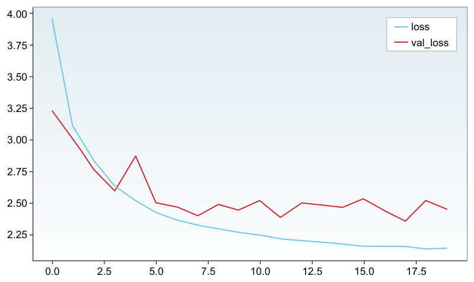
图 7.32 SSD7 训练 20 个 epoch 的 loss / val_loss（截自原书）第 7 步：预测#
用验证集做预测：predict_generator（batch_size=1、不增强）→ model.predict → decode_detections 解码原始输出（参数：confidence_thresh=0.5、iou_threshold=0.45、top_k=200、normalize_coords=True）。打印结果每行是 class conf xmin ymin xmax ymax（图 7.33），画到图上如图 7.34——每个预测框旁标注类别 + 置信度（jeep 0.88、car 0.93、car 0.60……），真值框也画出来对比。
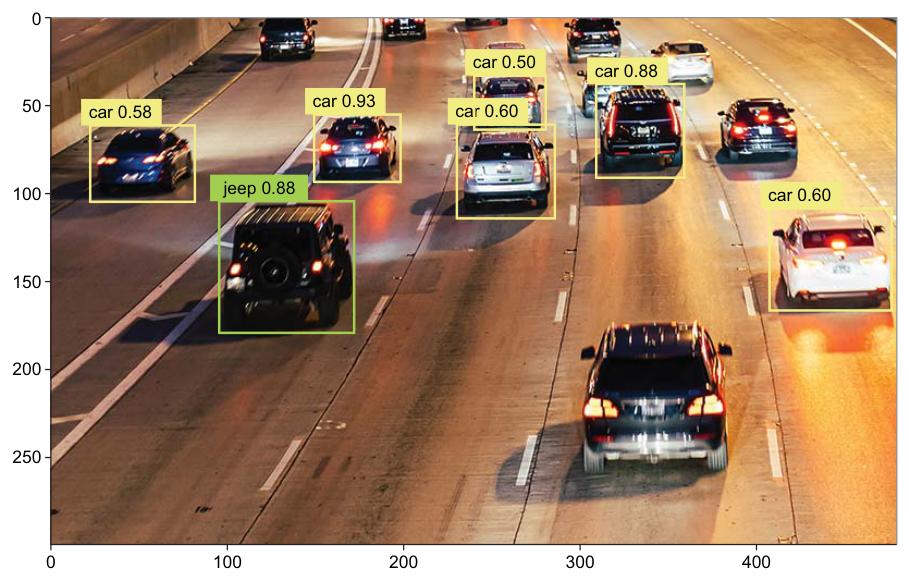
图 7.34 预测框画回原图：类别 + 置信度一目了然（截自原书）# ===== 书 7.5.7 预测 + 解码（PyTorch 等价）=====
model.eval()
images, _, filenames = next(iter(val_loader))
with torch.no_grad():
y_pred = model(images) # 原始预测（偏移量 + 得分）
y_decoded = decode_detections( # 解码：偏移 → 绝对坐标 → NMS
y_pred, confidence_thresh=0.5, # 置信度阈值（推理用 0.5，比训练筛 0.01 严）
iou_threshold=0.45, top_k=200, # 与 7.3.4 相同的 NMS 参数
normalize_coords=True, img_height=300, img_width=480)
np.set_printoptions(precision=2, suppress=True, linewidth=90)
print(' class conf xmin ymin xmax ymax')
print(y_decoded[0]) # 与书图 7.33 同格式输出
坑与陷阱#
8 个容易踩的坑
- 两个阈值别混：confidence threshold 管框"够不够自信"，NMS/IoU 阈值管"两框是不是同一物体"；评估时的 IoU 阈值（0.5/0.75）又是另一回事——三套阈值各司其职。
- R-CNN 慢的根源是"每个候选各过一遍 CNN、无共享计算"——不是 Selective Search 本身慢（它只是最后的瓶颈）。
- RoI Pooling 的存在理由：候选尺寸不一，FC 层只吃固定输入——没有它，Fast/Faster R-CNN 的双头输出接不上。
- anchor 回归预测的是偏移量 Δ，不是绝对坐标——直接回归中心点要额外约束防出界，锚框 + 偏移才是标准答案。
- SSD 的 8732 是"每类"的框数，NMS 逐类做；YOLO 的 10647 是三尺度之和，别写成 13×13×3=507。
- YOLOv3 用 sigmoid 不用 softmax：softmax 强加"一框一类"假设，Woman/Person 这类多标签数据会翻车。
- 背景框淹没问题：单阶段检测 99% 的候选是背景——
neg_pos_ratio=3的 hard negative mining 不是可选优化，是训练能收敛的前提。 - 选型口诀：单阶段快但略降精度，两阶段准但慢；实时（自动驾驶、视频流）选 YOLO/SSD，离线高精度选 Faster R-CNN。
速览#
- 检测 = 分类 + 定位：输出边界框 \((x,y,w,h)\) + 每框类别概率；框坐标以中心点表示。
- 通用框架四组件：region proposal → 特征提取与预测 → NMS → 评估指标。
- NMS 四步：置信度筛 → 取最高分 → 算 IoU → 抑制高重叠框；IoU = 交集面积 / 并集面积。
- mAP = 各类 AP（PR 曲线下面积）的平均；PR 曲线扫置信度阈值画成——比单点 accuracy 公平。
- R-CNN 演进主线：候选从 Selective Search（外挂）→ 特征图上取 → RPN（网络内生）；50s → 2s → 0.2s（250 倍加速），mAP 66.0% → 66.9% → 66.9%。
- 多任务损失 \(L = L_{cls} + [u{\ge}1] \cdot L_{loc}\)：背景区域定位损失清零；框回归用 smooth L1（对离群点稳健）。
- Faster R-CNN 的 RPN：3×3 conv（512 通道）+ 两个 1×1 头，输出 2k 得分 + 4k 坐标（k=9 个 anchor：3 尺度 × 3 长宽比）；anchor 标签按 IoU 分正负（>0.7 正 / <0.3 负）。
- SSD：VGG16 基网络 + 六个递减特征层（38/19/10/5/3/1）出 8,732 个框/类，多尺度 = 低分辨率层检大物体；NMS 阈值 0.45、top 200。
- YOLOv3：S×S 网格 + 每格 B=3 框 + sigmoid 多标签；Darknet-53 + 53 层 = 106 层全卷积，三尺度（13/26/52）合计 10,647 框，mAP 57.9%。
- 项目七步：建模 → 配置 → 编译（Adam 1e-3 + SSDLoss(neg_pos_ratio=3, alpha=1.0)）→ 数据（18,000/4,241，batch 16）→ 训练（20 epochs × 1000 步，早停 10、LR×0.2）→ 看损失 → 解码预测。
术语速查#
| 英文 | 中文 | 一句话 |
|---|---|---|
| Object Detection | 目标检测 | 分类 + 定位图中多个物体 |
| Bounding Box | 边界框 | 框住物体的矩形，\((x,y,w,h)\) |
| Region Proposal / RoI | 区域候选 / 感兴趣区域 | 系统认为可能含物体的候选区域 |
| Objectness Score | 目标性得分 | 框内有物体的概率 |
| Selective Search | 选择性搜索 | 贪心 + 分割的候选算法，每图约 2,000 框 |
| NMS | 非极大值抑制 | 保留最高分框、删高重叠重复框 |
| IoU | 交并比 | 交集面积 / 并集面积，0~1 |
| mAP | 平均精度均值 | 各类 AP（PR 曲线下面积）的平均 |
| PR Curve | PR 曲线 | 扫置信度阈值的 precision-recall 曲线 |
| FPS | 帧率 | 每秒处理帧数，衡量检测速度 |
| R-CNN / Fast / Faster | R-CNN 家族 | 两阶段检测三代目：50s / 2s / 0.2s |
| RPN | 区域候选网络 | 内生于网络的候选生成器（attention 网络） |
| Anchor Box | 锚框 | 预铺的参考框；回归预测相对它的偏移 Δ |
| RoI Pooling | RoI 池化 | 把任意尺寸 RoI max pooling 成固定 H×W |
| Multi-task Loss | 多任务损失 | 分类损失 + 定位损失的加权和 |
| Smooth L1 | 平滑 L1 损失 | 对离群点比 L2 稳健的回归损失 |
| Two-stage / One-stage | 两阶段 / 单阶段 | 先候选再分类 vs 稠密位置一次出预测 |
| SSD / Default Box (Prior) | 单发多框检测器 / 先验框 | 多尺度层上的锚框（SSD 的 anchor 叫法） |
| Dilated (Atrous) Conv | 空洞卷积 | 核内取值留间隔，小核大感受野 |
| YOLO / Darknet | —— | 网格 + 逐格出框；Darknet-53 特征主干 |
| Hard Negative Mining | 难例挖掘 | 只用最难的 3 倍负样本算损失（neg_pos_ratio=3） |
| Ground Truth | 真值 | 人工标注的边界框 |
| mAP@0.5 / @0.75 | —— | IoU 阈值 0.5 / 0.75 下的 mAP（COCO 口径） |
覆盖自查#
原书小节 → 笔记位置
| 原书 | 笔记 |
|---|---|
| 章首（分类 vs 检测、表 7.1、图 7.1、章节路线） | 导语 + 7.1 开篇 |
| 7.1（四组件）+ 7.1.1 + 7.1.2 + 7.1.3 + 7.1.4（FPS/IoU/PR/mAP + RECAP） | §7.1（含 numpy IoU/NMS 实现） |
| 7.2.1（R-CNN 四模块、Selective Search 侧栏、训练、缺点） | §7.2.1 |
| 7.2.2（Fast R-CNN 架构、多任务损失、缺点） | §7.2.2（含 PyTorch 损失） |
| 7.2.3（基网络、VGG vs ResNet 侧栏、FCN 侧栏、RPN、anchor、RPN 训练、FC 层、多任务损失、RPN 单独应用侧栏） | §7.2.3 |
| 7.2.4（表 7.3 演进总结 + R-CNN 局限 + 两阶段 vs 单阶段） | §7.2.4（表格重排 + 拓展） |
| 7.3（单阶段原理 + FPS 侧栏）+ 7.3.1（8732）+ 7.3.2（基网络 + 预测输出侧栏）+ 7.3.3（多尺度 + 空洞卷积侧栏）+ 7.3.4（NMS） | §7.3（padding 笔误标注 + PyTorch 全套核心代码） |
| 7.4（家族 + v1/v2/v3）+ 7.4.1（网格、10647、多尺度）+ 7.4.2（Darknet、三检测头） | §7.4（含 SSD vs YOLO 对比表） |
| 7.5（SSD7 项目七步 + LabelImg 侧栏） | §7.5（PyTorch 训练骨架 + 超参全保留） |
| 章末 Summary | §速览（无重复摘抄） |